深度学习通用检测工具是单一深度学习工具（分类测试工具、检测测试工具、分割测试工具）的集成版本，本工具支持多图像源、多ROI区域的深度学习检测，同时支持掩膜、精定位、ROI区域设置、模型选择、类别筛选；本工具支持对多个检测结果进行汇总和判断，输出最终结果；本工具支持存图信息设置以及存图；
本工具通过集成分类测试工具、检测测试工具、分割测试工具来实现深度学习检测功能，通过集成掩膜工具、找圆找线、数据输出工具等来实现辅助功能；
具体子工具原理可见相关工具帮助文档，本工具不再赘述；
本工具可覆盖80%的深度学习检测场景，但复杂的深度学习检测无法覆盖；
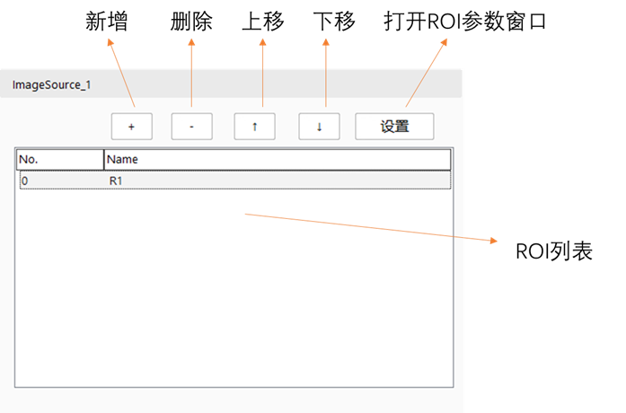
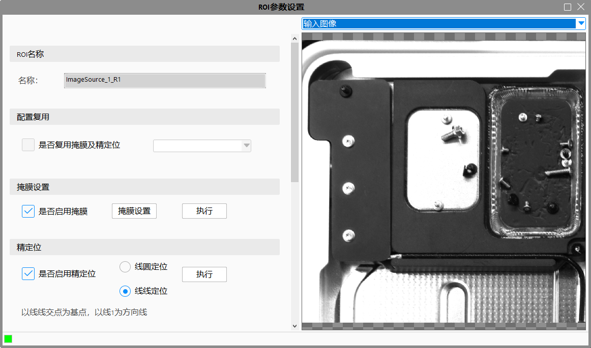
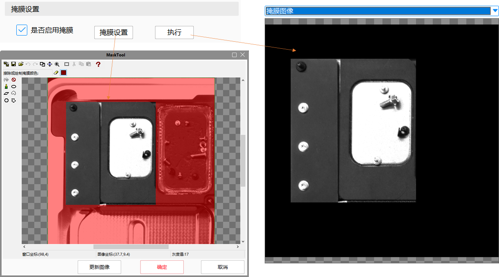
勾选“是否启用掩膜设置”，点击“掩膜设置”，打开掩膜窗口，可进行掩膜设置；
点击“执行”按钮，可在右侧view查看掩膜结果；
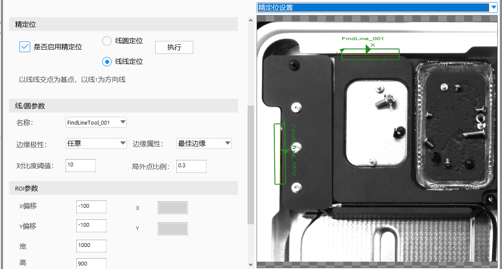
勾选“是否启用精定位”，可选择“线圆定位”和“线线定位”两种模式；
“线圆定位”模式下，圆心为ROI基准点，直线方向为ROI方向；“线线定位”模式下，线线交点为ROI基准点，直线1方向为ROI方向；
右侧下拉框选择“精定位设置”，可在view中通过拖动找线/找圆卡尺，设置查找位置；
在“线/圆参数”部分，通过下拉框选择相关卡尺，可设置其相关参数；
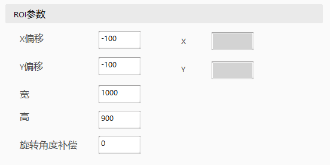
点击“执行”按钮，可见：
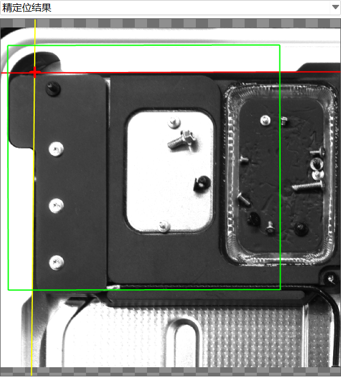
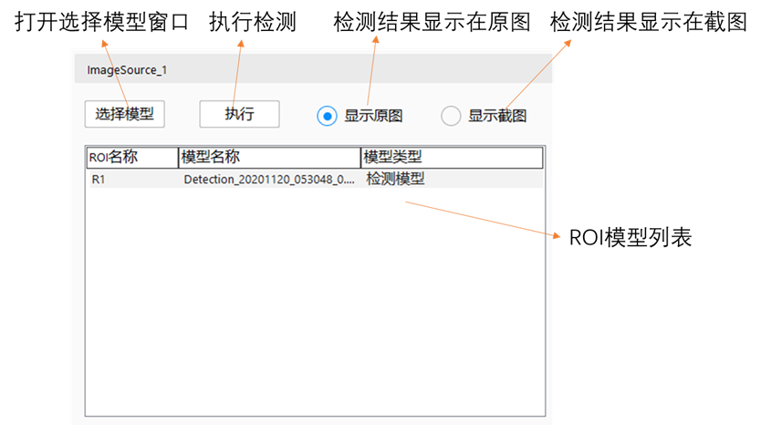
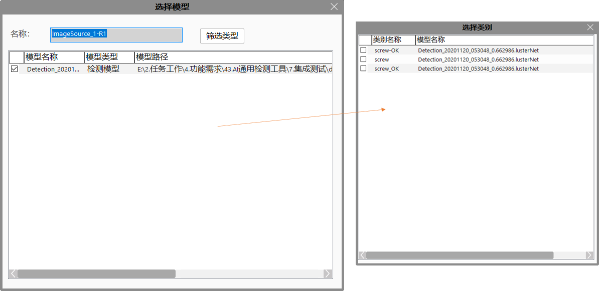
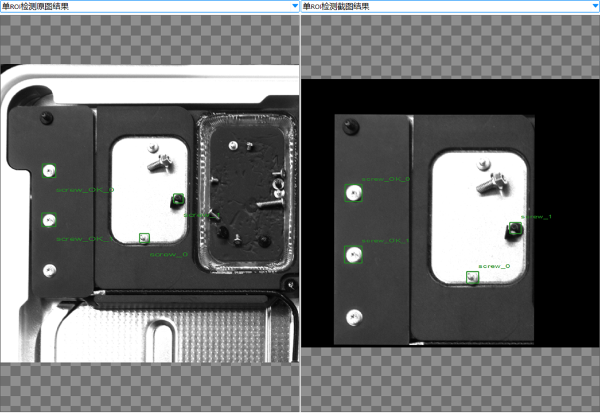
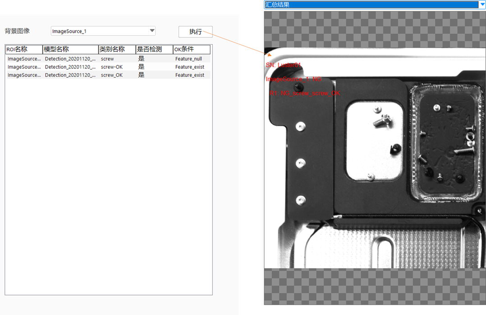
可在综合判定列表中，双击OK条件列选择OK条件；
“Feature_null”代表无特征时OK，检测出该特征为NG；“Feature_exit”代表有特征时OK，未检测出该特征为NG；“Feature_indiff”代表有无特征均OK；
通过“背景图像”下拉框，可选择综合判定的背景图像；
点击“执行”按钮，进行检测，右侧view显示检测结果；
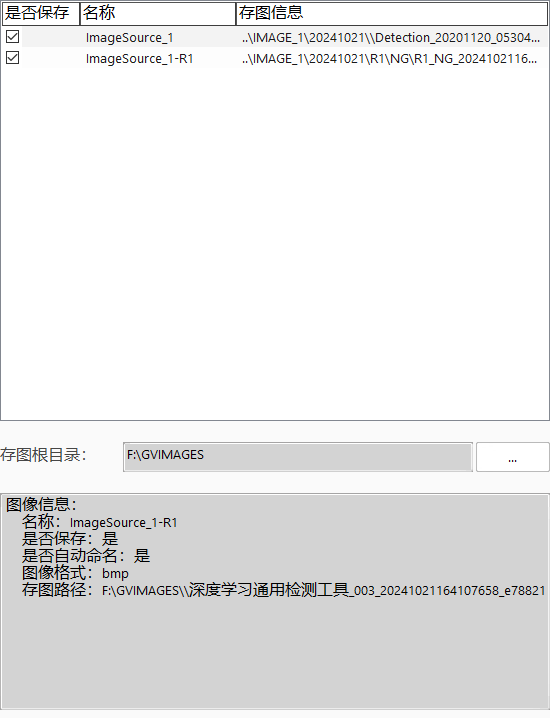
点击“…”按钮，可设置根目录；
点击“存图列表”相关项，可在信息窗口查看该项信息；
在“是否保存”列，勾选该项代表该项保存，不勾选该项代表不保存；
双击某项，可弹出“存图信息”窗口，可对存图名称、子目录等进行设置；
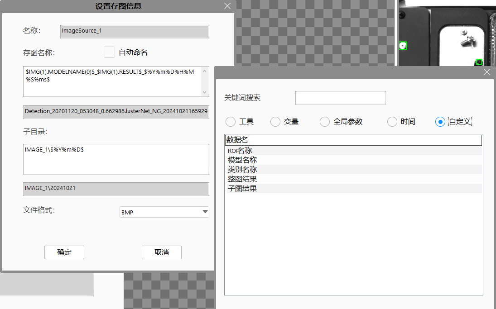
| No | 参数名称 | 参数类型 | 参数说明 | 设置方式 | 常用值 |
|---|---|---|---|---|---|
| 1 | 图像源个数 | Int | 设置该工具图像源的个数，范围1~16 | 数值填入 | 视具体情况而定，默认值为1 |
| 2 | 图像源1~16类型 | List | 可设置灰度图像或RGB图像，此参数决定图像源输入图像的类型 | 下拉选择 | 视具体情况而定，默认值为灰度图像 |
| 3 | 是否输出图像源检测ROI数组 | Bool | 是：输出参数链显示图像源1~16检测ROI数组，显示个数由图像源个数决定，该参数可显示在view上；否：隐藏输出参数链图像源1~16检测ROI数组，同时隐藏设置在view上的该参数； | 下拉选择 | 视具体情况而定，默认值为否 |
| 4 | 是否输出图像源检测结果位置数组 | Bool | 是：输出参数链显示图像源1~16检测结果位置数组，显示个数由图像源个数决定，该参数可显示在view上；否：隐藏输出参数链图像源1~16检测结果位置数组，同时隐藏设置在view上的该参数； | 下拉选择 | 视具体情况而定，默认值为否 |
| 5 | 是否输出图像源检测结果轮廓数组 | Bool | 是：输出参数链显示图像源1~16检测结果轮廓数组，显示个数由图像源个数决定，该参数可显示在view上；否：隐藏输出参数链图像源1~16检测结果轮廓数组，同时隐藏设置在view上的该参数； | 下拉选择 | 视具体情况而定，默认值为否 |
| 6 | 是否输出图像源精定位查找ROI数组 | Bool | 是：输出参数链显示图像源1~16精定位查找ROI数组，显示个数由图像源个数决定，该参数可显示在view上；否：隐藏输出参数链图像源1~16精定位查找ROI数组，同时隐藏设置在view上的该参数； | 下拉选择 | 视具体情况而定，默认值为否 |
| 7 | 是否输出图像源精定位查找结果数组 | Bool | 是：输出参数链显示图像源1~16精定位查找结果数组，显示个数由图像源个数决定，该参数可显示在view上；否：隐藏输出参数链图像源1~16精定位查找结果数组，同时隐藏设置在view上的该参数； | 下拉选择 | 视具体情况而定，默认值为否 |
| 输入参数 | 输入类型 | 参数说明 | 输入工具种类 | 单位 |
|---|---|---|---|---|
| 产品SN | String | 工件的SN号，用于记录 | 脚本/表达式/链接 | NA |
| 图像源1~16灰度图 | ScImage8 | 检测图像源（灰度图） | 链接 | NA |
| 图像源1~16RGB图 | ScImage24 | 检测图像源（RGB图） | 链接 | NA |
| 图像源1~16二维线性变换 | ScPlanarLinearTransform | 检测该图像源时所用二维线性变换 | 链接 | NA |
| 输出参数 | 输出类型 | 参数说明 | 后续可连接工具 | 单位 |
|---|---|---|---|---|
| 检测结果 | Bool | 该工具的检测总结果，OK or NG | 表达式/脚本 | NA |
| 检测结果数组 | GsImgSourceDetectResult数组 | 该工具的检测结果，以图像源为单位进行汇总 | 脚本 | NA |
| 图像源检测结果数组 | Bool数组 | 该工具每个图像源的检测结果，以图像源为单位进行汇总 | 脚本 | NA |
| 图像源1~16灰度图子图数组 | ScImage8数组 | 该工具每个图像源的裁剪子图（灰度图），裁剪区域为该图像源的设置ROI区域，数组大小即为该图像源设置ROI个数 | 脚本 | NA |
| 图像源1~16RGB图子图数组 | ScImage24数组 | 该工具每个图像源的裁剪子图（RGB图），裁剪区域为该图像源的设置ROI区域，数组大小即为该图像源设置ROI个数 | 脚本 | NA |
| 图像源1~16检测ROI数组 | ScAffineRectangular数组 | 该工具每个图像源的检测区域，数组大小即为该图像源设置ROI个数 | 脚本 | NA |
| 图像源1~16检测结果位置 | ScAffineRectangular二维数组 | 该工具每个图像源的检测特征位置，第一层数组大小为该图像源设置ROI个数，第二层数组大小为ROI内所检测到的特征数量；分类模型无检测结果位置 | 脚本 | NA |
| 图像源1~16检测结果轮廓 | ScPolyline二维数组 | 该工具每个图像源的检测特征轮廓，第一层数组大小为该图像源设置ROI个数，第二层数组大小为ROI内所检测到的特征数量；分类、检测模型无检测结果轮廓 | 脚本 | NA |
| 图像源1~16精定位查找ROI | GsPrecisePosFindRoi数组 | 该工具每个图像源的精定位查找ROI位置，数组个数为该图像源设置ROI中启用精定位的个数；查找ROI分为线圆模式和线线模式 | 脚本 | NA |
| 图像源1~16精定位查找结果 | GsPrecisePosResult数组 | 该工具每个图像源的精定位查找结果，数组个数为该图像源设置ROI中启用精定位的个数；查找结果由查找模式决定是输出线圆还是线线 | 脚本 | NA |
| 输出参数 | 输出类型 | 参数说明 | 单位 |
|---|---|---|---|
| 执行结果 | Bool | 工具执行结果；注意区别于检测结果 | NA |
| 执行时间 | Float | 工具执行时间 | ms |
| 现象描述 | 解决方法 |
|---|---|
| 开启工具属性界面，显示某图像源某ROI模式初始化失败 | 查看该图像源ROI是否配置模型或在模型管理器中查看该模型是否初始化成功 |
描述：图像类型
| 分类 | 名称 | 描述 | 类型 | 读/写 |
|---|---|---|---|---|
| 属性 | eImgGray | 灰度图 | 枚举 | 可读可写 |
| eImgRGB | 彩色图 | 枚举 | 可读可写 |
描述：精定位模式
| 分类 | 名称 | 描述 | 类型 | 读/写 |
|---|---|---|---|---|
| 属性 | eLineCircle | 线圆定位 | 枚举 | 可读可写 |
| eLineLine | 线线定位 | 枚举 | 可读可写 |
描述：精定位查找ROI
| 分类 | 名称 | 描述 | 类型 | 读/写 |
|---|---|---|---|---|
| 属性 | bEnable | 是否启用精定位 | bool | 只读 |
| eType | 精定位类型 | GePrecisePosType | 只读 | |
| sFindCircleRoi | 找圆卡尺区域 | scGuiFindCircleEx | 只读 | |
| sFindLineOneRoi | 找线1卡尺区域 | scGuiFindLineEx | 只读 | |
| sFindLineTwoRoi | 找线2卡尺区域 | scGuiFindLineEx | 只读 |
描述：精定位查找结果
| 分类 | 名称 | 描述 | 类型 | 读/写 |
|---|---|---|---|---|
| 属性 | eType | 精定位类型 | GePrecisePosType | 只读 |
| sPointDatum | 基准点 | sc2Vector | 只读 | |
| sLineDirect | 方向线 | scLine | 只读 | |
| sCircleReult | 圆 | scCircle | 只读 | |
| sLineNormal | 辅助线 | scLine | 只读 | |
| rcResultRoi | 结果区域 | scAffineRect | 只读 |
描述：深度学习模型检测特征结果
| 分类 | 名称 | 描述 | 类型 | 读/写 |
|---|---|---|---|---|
| 属性 | nCategoryIndex | 类别索引 | int | 只读 |
| strCategoryName | 类别名称 | string | 只读 | |
| fConfidenceLevel | 置信度 | float | 只读 | |
| dArea | 面积 | double | 只读 | |
| strReferenceModel | 所属模型名称 | string | 只读 | |
| rcLocationOrg | 特征在原图位置 | scAffineRect | 只读 | |
| rcLocationCap | 特征在截图位置 | scAffineRect | 只读 | |
| sResultContourOrg | 特征在原图轮廓 | scPolyline | 只读 | |
| sResultContourCap | 特征在截图轮廓 | scPolyline | 只读 |
描述：深度学习模型检测某特征汇总结果
| 分类 | 名称 | 描述 | 类型 | 读/写 |
|---|---|---|---|---|
| 属性 | strCategoryName | 类别名称 | string | 只读 |
| nResultCount | 类别数量 | int | 只读 | |
| dAccumulatedArea | 类别总面积 | double | 只读 | |
| strReferenceModel | 所属模型名称 | string | 只读 | |
| vectCategoryResult | 类别数组 | GsCategoryResult数组 | 只读 |
描述：ROI检测结果
| 分类 | 名称 | 描述 | 类型 | 读/写 |
|---|---|---|---|---|
| 属性 | strRoiName | ROI名称 | string | 只读 |
| sPrecisePosFindRoi | 精定位查找ROI | GsPrecisePosFindRoi | 只读 | |
| sPrecisePosResult | 精定位查找结果 | GsPrecisePosResult | 只读 | |
| rcDetectRoi | 检测区域 | scAffineRect | 只读 | |
| imgSubGray | 灰度图裁剪图 | scImageGray | 只读 | |
| imgSubRGB | 彩色图裁剪图 | scImageRGB | 只读 | |
| bDetectResult | 检测结果 | bool | 只读 | |
| vectCategoryTotalResult | 检测特征数组 | GsCategoryTotalResult数组 | 只读 |
描述：图像源检测结果
| 分类 | 名称 | 描述 | 类型 | 读/写 |
|---|---|---|---|---|
| 属性 | strImgSourceName | 图像源名称 | string | 只读 |
| eImgType | 图像类型 | GeImgType | 只读 | |
| bDetectResult | 检测结果 | bool | 只读 | |
| mapROIDetectResult | ROI检测结果集合 | 字典{ROI名称，GsROIDetectResult} | 只读 |
python
bResult = GvTool.GetToolData("深度学习通用检测工具_003.检测结果")
print(bResult)
ProductResultArray = GvTool.GetToolData("深度学习通用检测工具_003.检测结果数组")
print("ProductResult size = ",len(ProductResultArray))
print('')
for imgResult in ProductResultArray:
print("image name = ",imgResult.strImgSourceName)
print("image type = ",imgResult.eImgType)
print("image result = ",imgResult.bDetectResult)
print("ROI size = ",len(imgResult.mapROIDetectResult))
for ROIResult in imgResult.mapROIDetectResult:
roi = ROIResult.data()
print(" ROI name = ",roi.strRoiName)
print(" ROI result = ",roi.bDetectResult)
print(" ROI rcDetectRoi PoX = ","{:.2f}".format(roi.rcDetectRoi.GetCornerPo().GetX()))
print(" ROI imgSubGray Width = ",roi.imgSubGray.Width())
print(" ROI imgSubRGB Width = ",roi.imgSubRGB.Width())
print(" CategoryTotalResult size = ",len(roi.vectCategoryTotalResult))
for CategoryTotal in roi.vectCategoryTotalResult:
print(" --------------------- ")
print(" CategoryTotal name = ",CategoryTotal.strCategoryName)
print(" CategoryTotal size = ",CategoryTotal.nResultCount)
print(" CategoryTotal AccumulatedArea = ",CategoryTotal.dAccumulatedArea)
print(" CategoryTotal ReferenceModel = ",CategoryTotal.strReferenceModel)
print(" CategoryTotal vectCategoryResult size = ",len(CategoryTotal.vectCategoryResult))
for category in CategoryTotal.vectCategoryResult[0:2]:
print(" --------------------- ")
print(" Category Index = ",category.nCategoryIndex)
print(" Category name = ",category.strCategoryName)
print(" Category fConfidenceLevel = ","{:.2f}".format(category.fConfidenceLevel))
print(" Category dArea = ",category.dArea)
print(" Category strReferenceModel = ",category.strReferenceModel)
print(" Category rcLocationCap PoX = ","{:.2f}".format(category.rcLocationCap.GetCornerPo().GetX()))
print(" Category rcLocationOrg PoX = ","{:.2f}".format(category.rcLocationOrg.GetCornerPo().GetX()))
print(" Category sResultContourCap = ",(category.sResultContourCap.GetVerticesNum()))
print(" Category sResultContourOrg = ",(category.sResultContourOrg.GetVerticesNum()))
if roi.sPrecisePosFindRoi.bEnable:
print(" 开启精定位")
print(" sPrecisePosFindRoi.eType = ",roi.sPrecisePosFindRoi.eType)
print(" sPrecisePosFindRoi.sFindCircleRoi Radius = ",roi.sPrecisePosFindRoi.sFindCircleRoi.GetAnnulusSection().GetRadius())
print(" sPrecisePosFindRoi.sFindLineOneRoi Length = ",roi.sPrecisePosFindRoi.sFindLineOneRoi.GetAffineRect().GetXLength())
print(" sPrecisePosFindRoi.sFindLineTwoRoi Length = ",roi.sPrecisePosFindRoi.sFindLineTwoRoi.GetAffineRect().GetXLength())
print(" PrecisePosResult eType = ",roi.sPrecisePosResult.eType)
print(" PrecisePosResult sPointDatum x = ",roi.sPrecisePosResult.sPointDatum.GetX())
print(" PrecisePosResult sLineDirect Rotate = ",roi.sPrecisePosResult.sLineDirect.GetRotation().ToDouble())
print(" PrecisePosResult sCircleReult Radius = ",roi.sPrecisePosResult.sCircleReult.GetRadius())
print(" PrecisePosResult sLineNormal Rotate = ",roi.sPrecisePosResult.sLineNormal.GetRotation().ToDouble())
print(" PrecisePosResult rcResultRoi PoX = ",roi.sPrecisePosResult.rcResultRoi.GetCornerPo().GetX())
else:
print(" 未开启精定位")
参见“\Samples\深度学习通用检测工具.gvp”。
无
| 版本号 | 章节号 | 修订内容描述 | 修订人 | 修订日期 |
|---|---|---|---|---|
| V1.0 | – | 初次发布 | 朱永吉 | 2024/10/21 |